Studije slučaja
Odabrani radovi i rezultati
Detaljan pregled ključnih projekata iz farme, zdravstva i e-commercea. Kliknite na karticu za potpunu priču.
Neki nazivi projekata su općeniti radi poštivanja povjerljivosti klijenata.
Platforma za istragu uzroka - Osiguranje kvalitete u proizvodnji
UX Design Lead & poslovni analitičar · Podržka UI dizajneraUI/UX dizajner i poslovni analitičar na platformi za poboljšanje procesa analize uzroka u farmaceutskoj proizvodnji. Implementacija Atomic Design principa, višestrukih istražnih metodologija (Fishbone, Is/Is Not, 5 Whys) i vođenje zagovaranja dionika - utječaj na 10.000+ korisnika.
Pregled
Poboljšanje procesa analize uzroka unutar Rocheovog okvira osiguranja kvalitete. Platforma vodi proizvodne znanstvenike i istražitelje kroz sustavne metodologije rješavanja problema pri istraživanju neplaniranih događaja.
Ključni doprinosi
- Modularno sučelje (Atomic Design) – Implementacija Atomic Design principa za skalabilni, višekratni UI komponentni okvir
- Fishbone metodologija UI – Dizajn sučelja s Ishikawa dijagram pristupom za identifikaciju uzroka proizvodnih problema
- Is/Is Not analiza UI – Izrada alata za razlikovanje specifičnih uvjeta problema usporedbom scenarija
- 5 Whys sučelje – Kreiranje intuitivnog alata koji vodi istražitelje kroz iterativna „zašto“ pitanja do temeljnih uzroka
- Istražni modal – Dizajn UI-a za prikupljanje dodatnih informacija tijekom istražnog procesa
- Sveobuhvatno mapiranje procesa – Sustavna identifikacija i rješavanje neučinkovitosti u postojećim RCA procesima
- Analiza dionika i zagovaranje – Dubinsko istraživanje za informiranje i zagovaranje poboljšanja sustava
- Upravljanje promjenama – Primjena teorija upravljanja promjenama za vođenje evolucije projekta
Istražne metodologije
Fishbone (Ishikawa)
Vizualno sučelje dijagrama uzroka i posljedica za kategorizaciju potencijalnih uzroka proizvodnih problema u sustavne grupe.
Is / Is Not
Usporedni analitički alat za razlikovanje specifičnih karakteristika problema ispitivanjem mjesta, vremena i načina pojavljivanja.
5 Whys
Sekvencijalno sučelje za ispitivanje koje vodi istražitelje kroz iterativne slojeve uzročnosti do pravog temeljnog uzroka.
Galerija dizajna
Snimke zaslona stvarne platforme (NDA istekao). Kliknite za uvećanje.
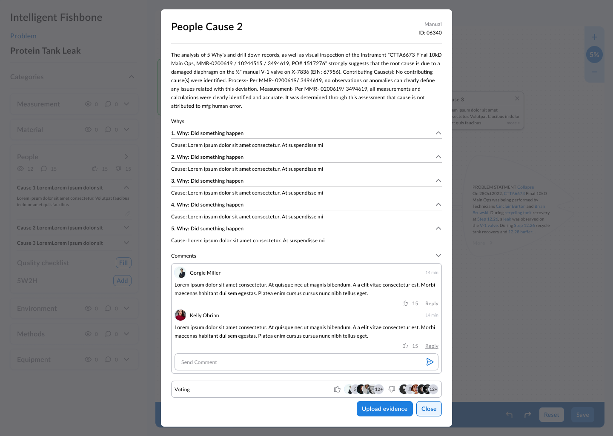
Neplanirani događaj – Početni koraci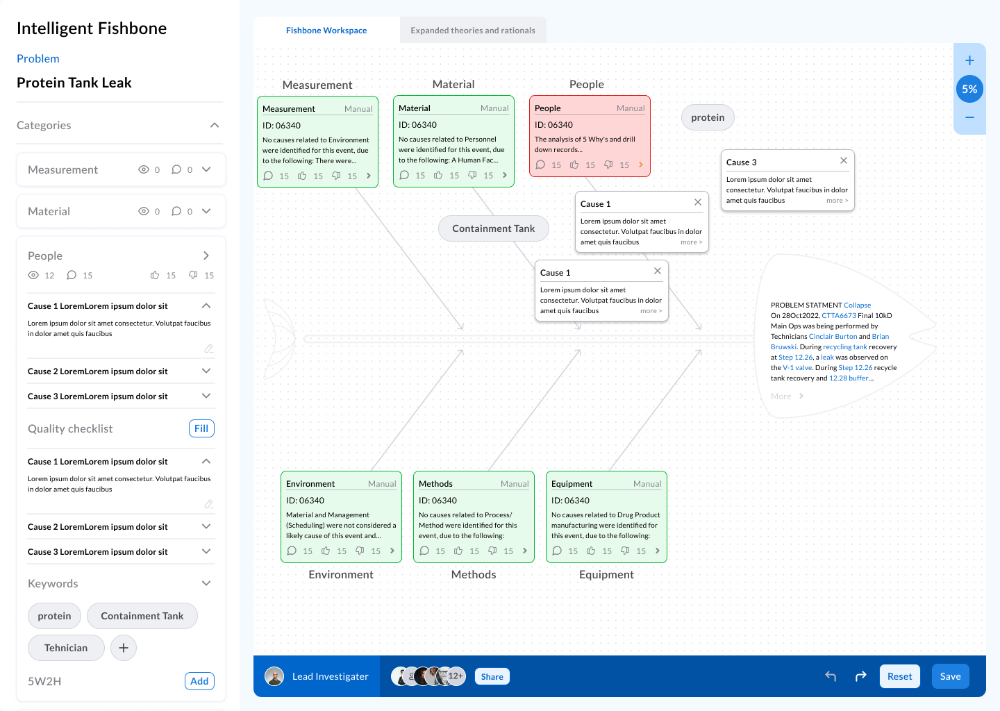
Fishbone metodologija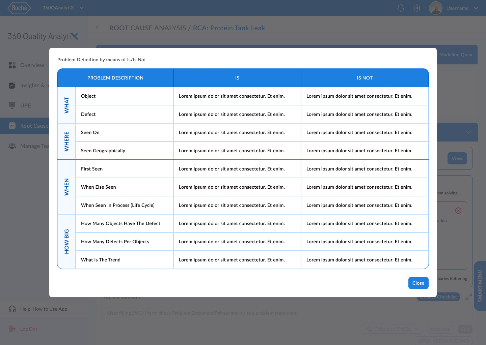
Is/Is Not analiza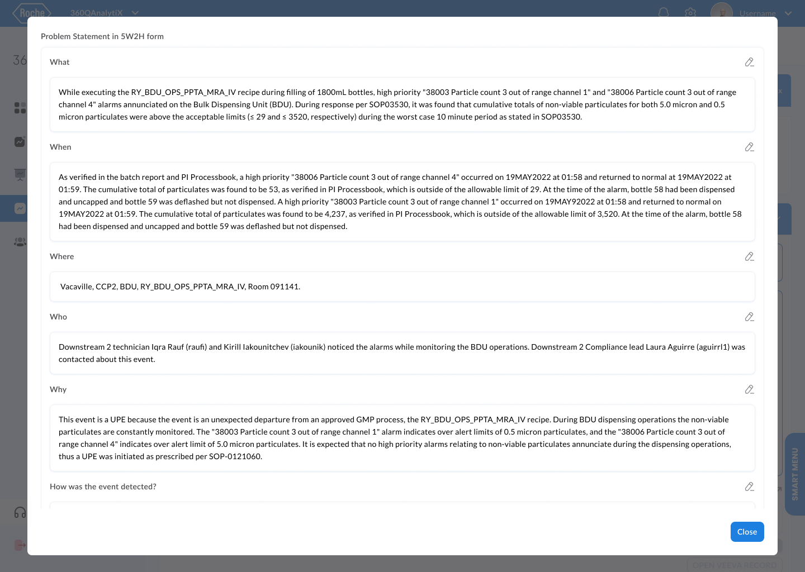
5 Whys istraga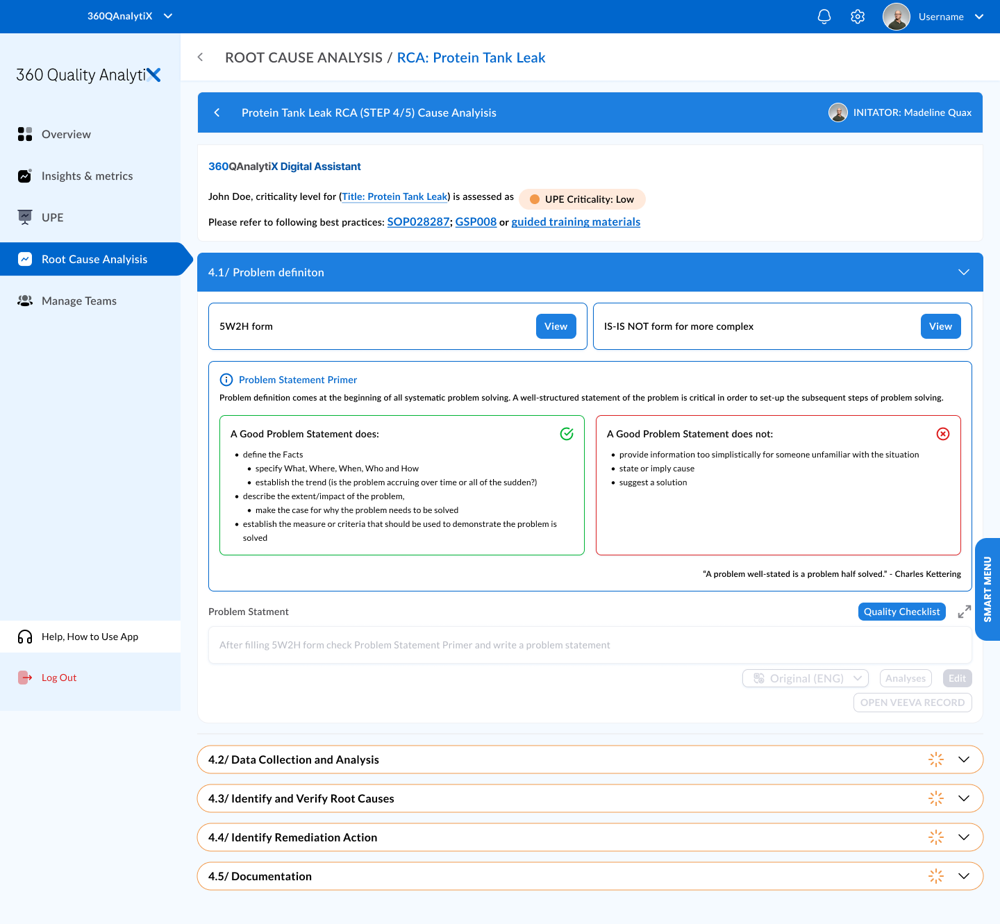
Pregled platformeRezultat
Isporučena sveobuhvatna istražna platforma koju koristi 10.000+ korisnika u Roche Diagnostics. Modularni Atomic Design pristup omogućio je skalabilne UI komponente, dok su tri istražne metodologije pružile strukturirane, sustavne alate za farmaceutsko osiguranje kvalitete.
Regulatorni alat za izvještavanje
Voditelj dizajna · Solo, međufunkcionalno usklađivanjeVoditelj UI/UX dizajna na farmaceutskom sustavu upravljanja dokumentacijom. Dizajn ergonomske kontrolne ploče s RBAC-om, naprednim filtriranjem i iterativnim prototipiranjem - ~120 UI dizajna za platformu u Rocheovim proizvodnim pogonima.
Pregled
Razvoj intuitivnog, učinkovitog sustava za farmaceutsko upravljanje dokumentacijom pri Rocheu. Primjena HCI principa za korisnički prijateljske rasporede i dizajn algoritamske hijerarhijske arhitekture kontrole pristupa (RBAC).
Moja uloga često je prelazila standardne UI/UX odgovornosti. Vođen iskrenim interesom za bioznanosti i posvećenošću uspjehu projekta, duboko sam se uključio u razumijevanje znanstvenog konteksta.
Ključni doprinosi
- Ergonomska kontrolna ploča – Primjena HCI principa za korisnički prijateljski pregled projekta s postavkama, favoritima i DAMAS/MDMS linkovima
- RBAC sustav – Razvoj arhitekture kontrole pristupa temeljene na ulogama za učinkovito praćenje i upravljanje dozvolama
- Odabir metapodataka – Dizajn sučelja za odabir raznolikih projektnih metapodataka
- Izvješća o validaciji procesa – Kreiranje specijaliziranih UI-a uključujući komponente izvješćivanja o kromatografiji
- Dohvat informacija – Implementacija naprednog algoritamskog filtriranja
- Responzivni dizajn – Besprijekorno iskustvo na različitim platformama i uređajima
- Promotivni materijali – Produkcija video i marketinškog sadržaja (prema SMART Process Design zahtjevima)
Proces i suradnja
Bliska suradnja s Product Ownerima, stručnjacima i inženjerima koristeći draw.io za mapiranje arhitekture sustava, dokumentaciju organizacijske hijerarhije i razvoj wireframeova.
Galerija dizajna
Snimke zaslona stvarne platforme (NDA istekao). Kliknite za uvećanje.
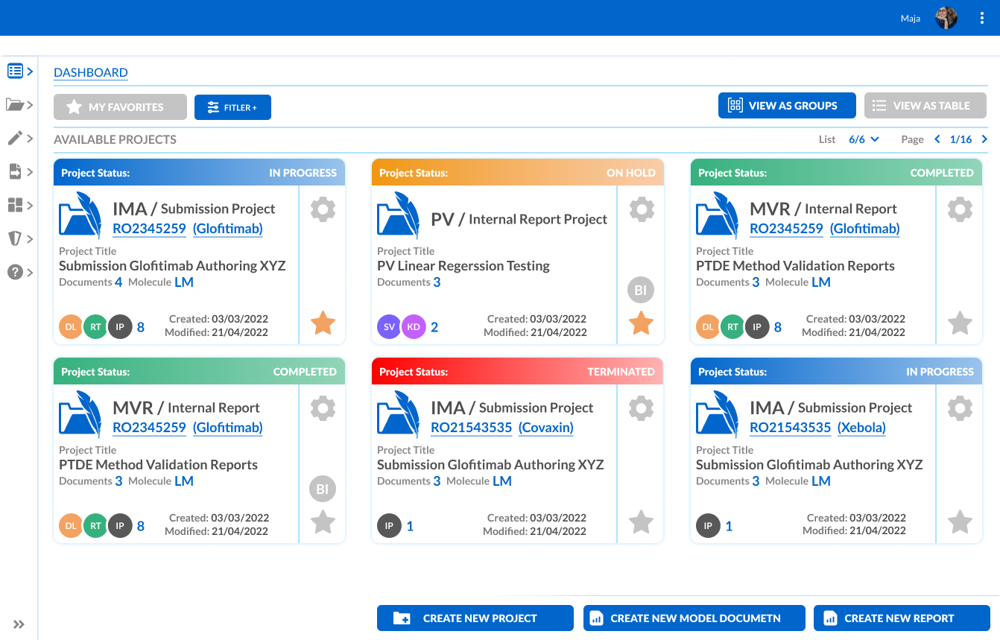
Kontrolna ploča – Pregled projekta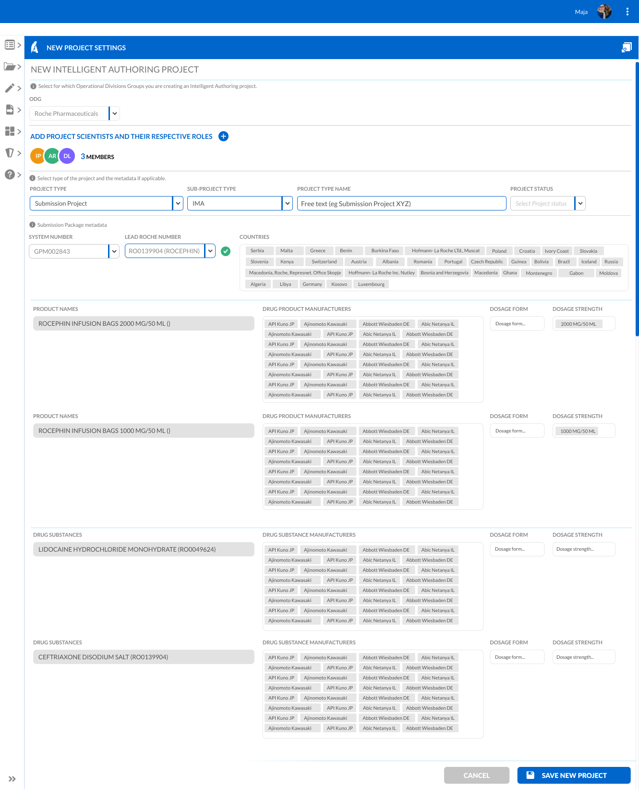
Odabir metapodataka – Novi projekt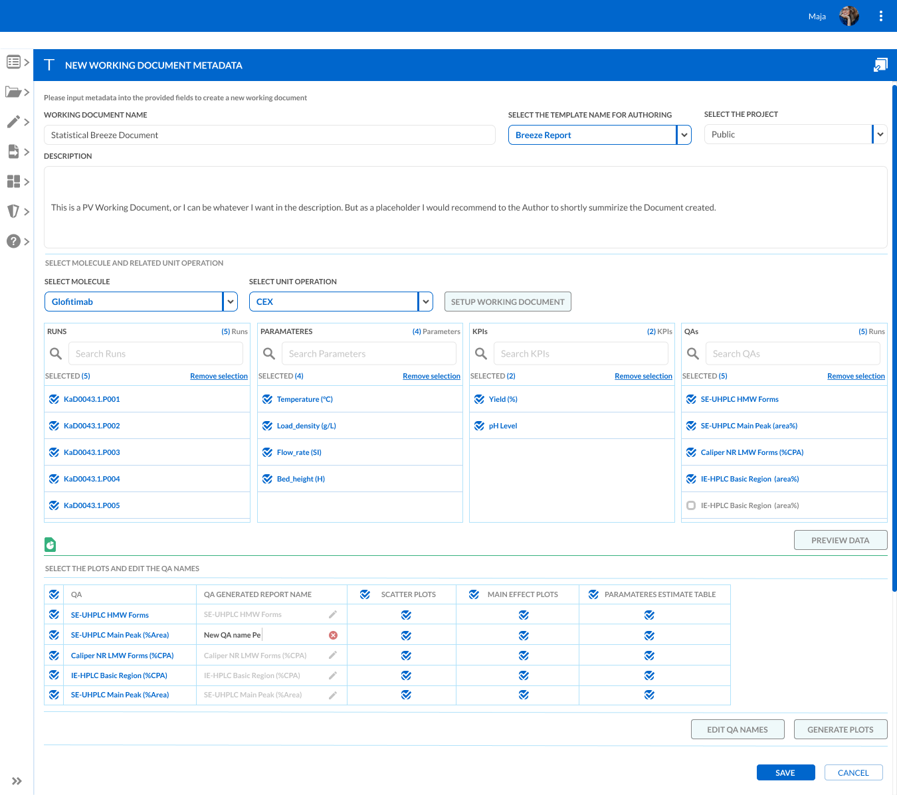
Kromatografija izvješća UI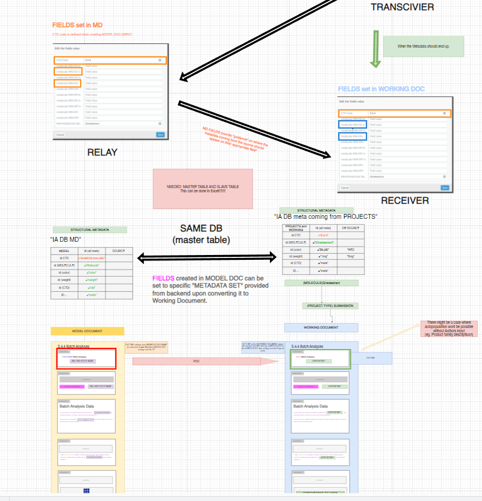
draw.io – Arhitektura i wireframeoviRezultat
Isporučeno ~120 UI dizajna za platformu koja obuhvaća Rocheovu farmaceutsku proizvodnu dokumentaciju. RBAC sustav i ergonomska kontrolna ploča postali su temeljne komponente.
AI nabava i upravljanje dobavljačima
Ovaj angažman je pod aktivnim NDA. Za opseg i odgovornosti pogledajte odjeljak Iskustvo:
UI/UX konzultant i dizajner prezentacija · RFP/RFI & OSINT dubinska analiza dobavljača

iPhone 7 prednarudžba landing stranica
Dizajner i developer · SoloIstraživanje tržišta vodilo je minimalističkom pristupu - pohrana umjesto specifikacija, UI usklađen s bojama, crna pozadina za luksuz. Nagrađena „Najbolja promotivna landing stranica“ u Hrvatskoj (Appcom / Apple Partner, 2016).
Pogledaj demoOd renderinga do stvarnosti
3D vizualizacije interijera izrađene u 3ds Maxu za ugostiteljske klijente - pa zatim i stvarno izgrađene. Fotografije niske rezolucije snimljene su mobitelima tog doba, ali prostori govore sami za sebe.
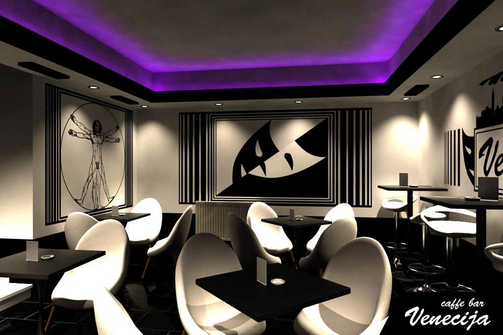
3D rendering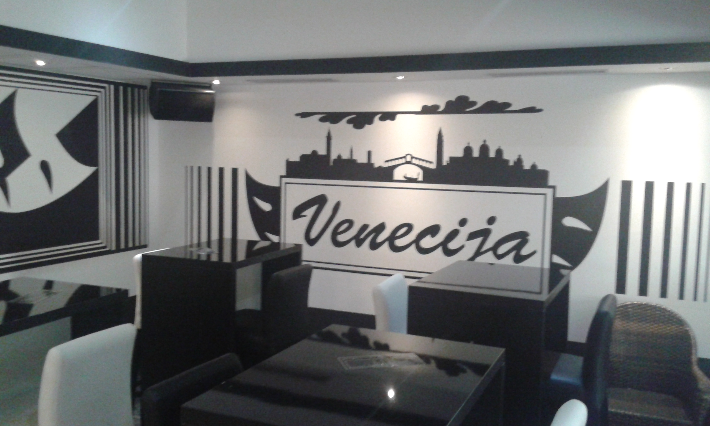
Izgrađeni rezultat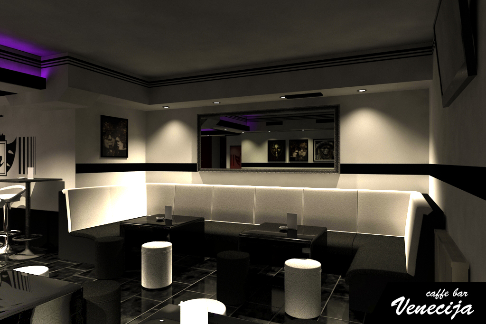
3D rendering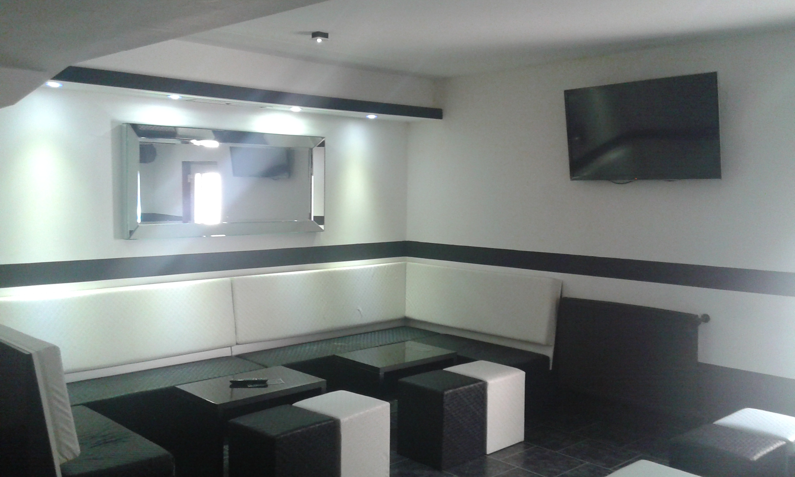
Izgrađeni rezultat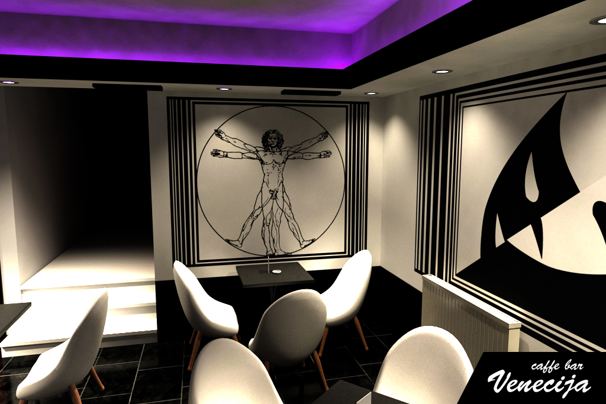
3D rendering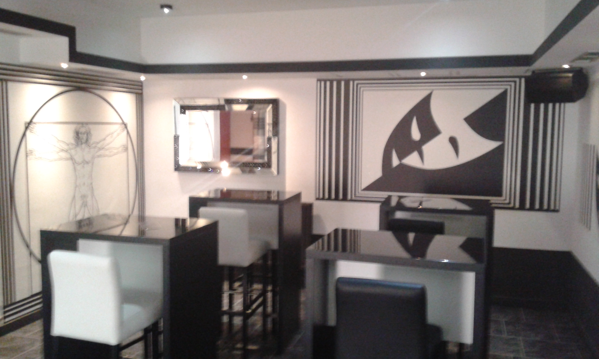
Izgrađeni rezultatNight Bar Venecija, Zagreb - dizajniran i vizualiziran 2010., izgrađen iste godine.